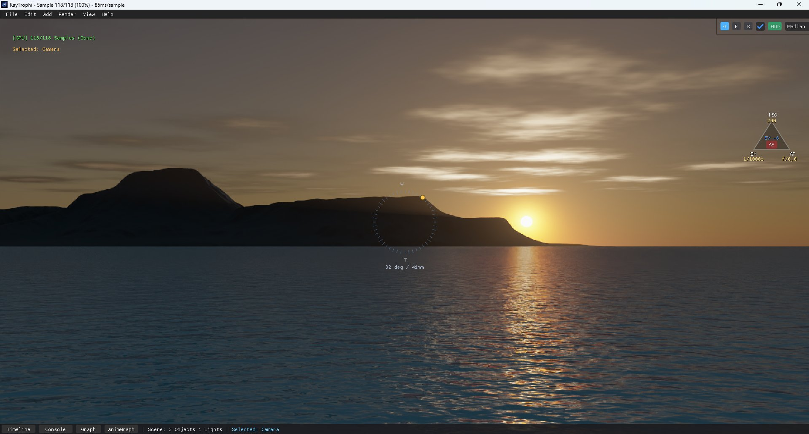
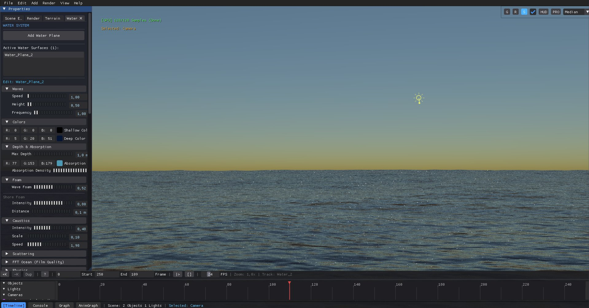
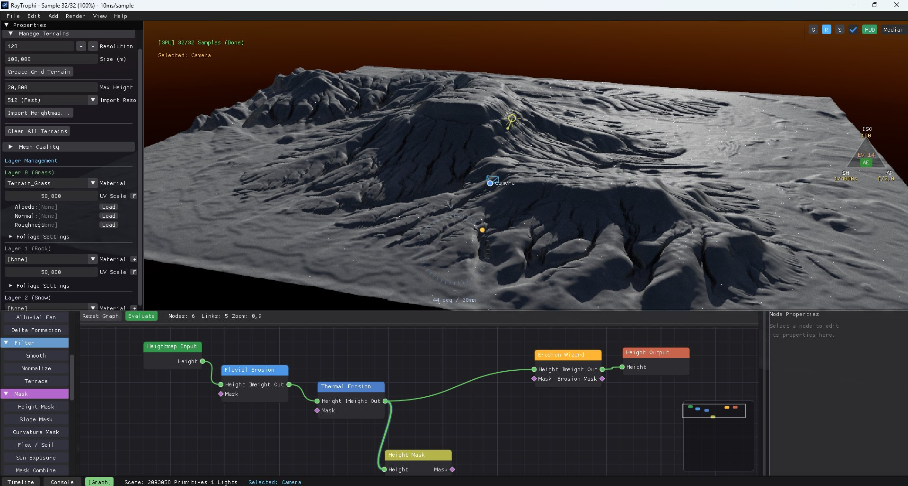
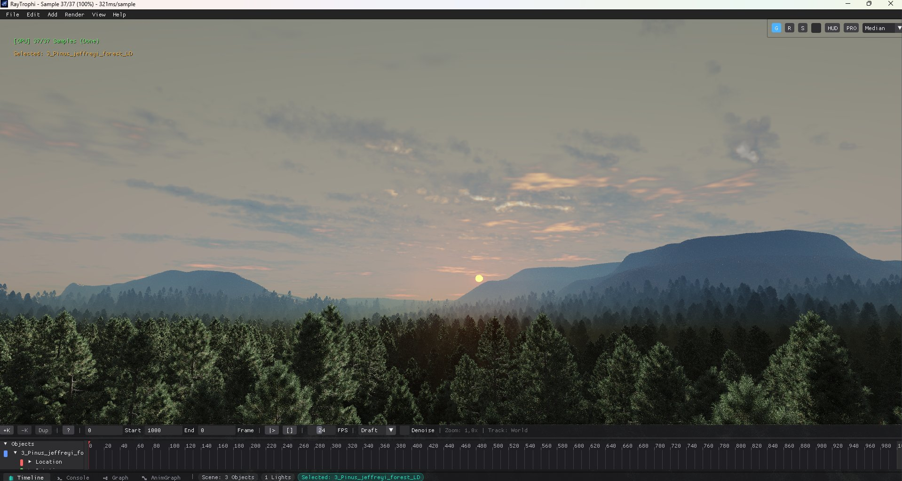
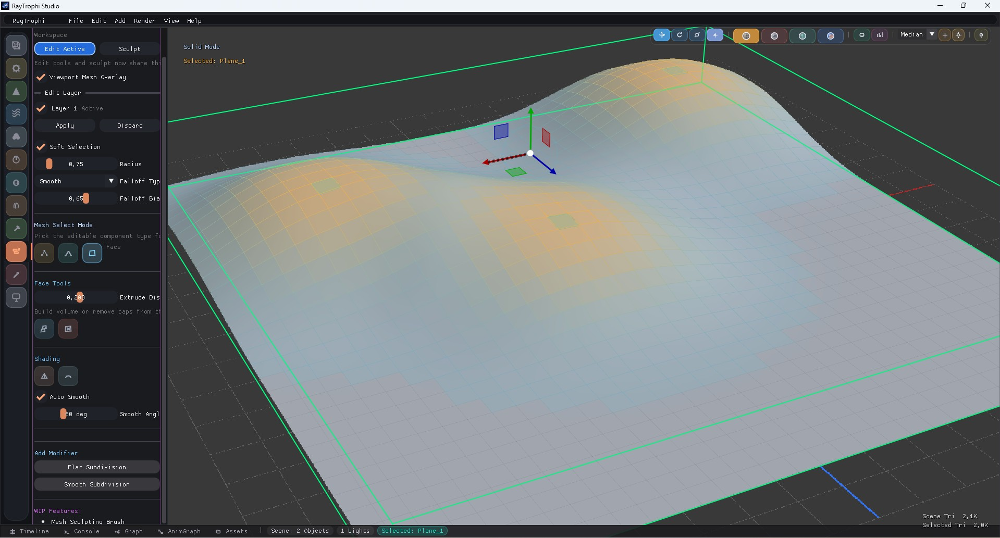
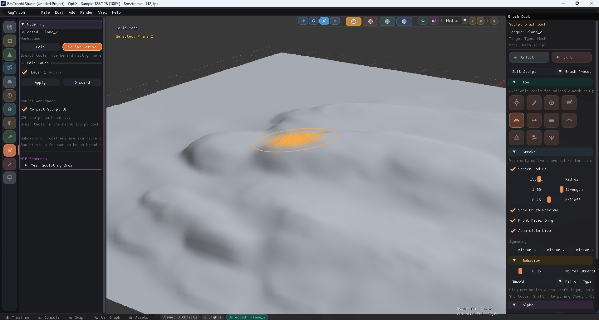
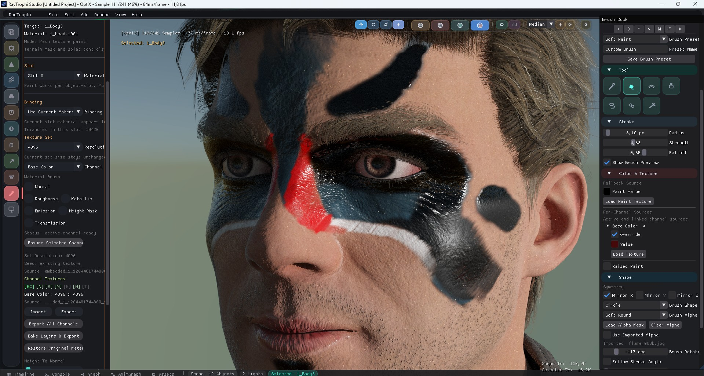
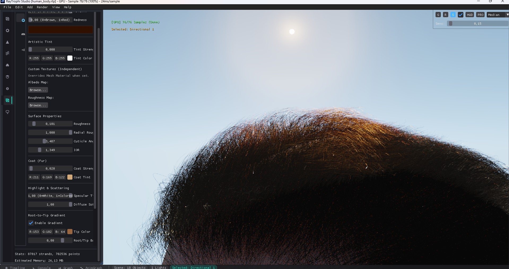
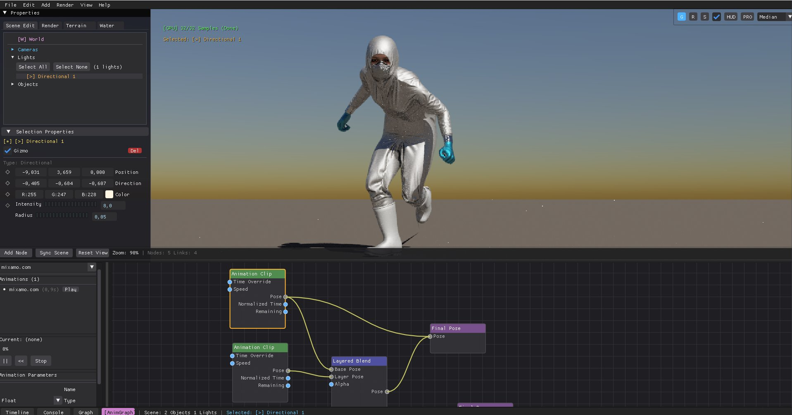

Resolution: 320x240 | Backend: CPU Web Path Tracer
RayTrophi Studio
RayTrophi Studio
Next-Generation Procedural World Generator & Spectral Path Tracing DCC.
Yeni Nesil Prosedürel Dünya Oluşturucu ve Spektral Işın İzlemeli DCC Motoru.
RayTrophi Studio is a professional digital content creation (DCC) software featuring procedurally generated virtual landscapes, physical fluid simulations, and high-performance skeletal animations. Engineered entirely in modern C++20, RayTrophi hosts a triple path tracing rendering core supporting **NVIDIA OptiX (CUDA)**, **Vulkan Ray Tracing (Vulkan RT)**, and parallel CPU acceleration via **Intel Embree**.
Engine Statistics & Code Architecture
RayTrophi is built with modularity and bare-metal performance in mind, ensuring memory layout alignments match SSE/AVX vectors.
| Architecture Layer | Details |
|---|---|
| Procedural Heightfields | Erosion algorithms processed entirely on GPU compute shaders. |
| Acceleration Structures | Direct OptiX IAS/GAS hierarchies with dynamic bottom-level BVH refitting. |
| Immediate GUI Interface | ImGui framework styled with dark-space glassmorphism widgets. |
| Dynamic Grooming | Linear Swept Sphere (LSS) intersections with Marschner BSDF shading. |
Core System Specifications
Atmosphere & Clouds
Spectral Nishita scattering, Ozone absorption bands, volumetric Henyey-Greenstein clouds, and NanoVDB gas flow simulations.
NanoVDBFFT Hydrodynamics
Tessendorf FFT waves, Phillips wind spectrums, volumetric light shafts, and auto-carving Bezier splines.
FFT OceanProcedural Terrain
Thermal/hydraulic erosion compute solvers, splat map generators, and brush-based instanced foliage scattering.
Compute ShaderPBVH Sculpting
Deformation of high-poly meshes using brush templates, alphas, and interactive falloff graphs.
PBVH / DynTopoRayTrophi Studio; prosedürel sanal araziler, fiziksel akışkan simülasyonları ve yüksek performanslı iskelet animasyonları sunan profesyonel bir dijital içerik oluşturma (DCC) yazılımıdır. Tamamen modern C++20 ile sıfırdan geliştirilen RayTrophi, **NVIDIA OptiX (CUDA)**, **Vulkan Ray Tracing (Vulkan RT)** ve **Intel Embree** platformlarını destekleyen üçlü bir ışın izleme (path tracing) çekirdeğine sahiptir.
Motor İstatistikleri ve Kod Mimarisi
RayTrophi, bellek hizalamalarının SSE/AVX vektörleriyle tam eşleşmesini sağlayan, düşük seviyeli performans odaklı modüler bir yapıya sahiptir.
| Mimari Katman | Detaylar |
|---|---|
| Prosedürel Yükseklik Alanları | Tamamen GPU compute shader'ları üzerinde işlenen erozyon çözücüler. |
| Hızlandırma Yapıları (BVH) | Dinamik bottom-level BVH refit içeren doğrudan OptiX IAS/GAS hiyerarşileri. |
| Arayüz Arayüzü | Karanlık uzay cam temasıyla özelleştirilmiş ImGui kontrolleri. |
| Dinamik Saç Tasarımı | Marschner BSDF gölgelendirmeli Linear Swept Sphere (LSS) saç kesişimleri. |

World & Atmospheric Simulations
The World module manages global environment lighting, spectral sky models, volumetric cloud coverage, and sparse NanoVDB fluid grids.
Nishita Atmospheric Scattering
Instead of low-fidelity texture skyboxes, RayTrophi simulates light transport inside a multi-layered atmospheric dome using Rayleigh scattering (simulating small nitrogen/oxygen particles) and Mie scattering (dust and water particles). It also solves the Chappuis absorption bands for Ozone, producing deep blues during golden hours.
struct NishitaSkySettings {
float sun_elevation; // Sun position above horizon (-10 to 90 degrees)
float air_density; // Rayleigh scattering coefficient scale
float dust_density; // Mie scattering coefficient scale
float ozone_density; // Ozone absorption scaling (Chappuis bands)
bool sync_sun_light; // Synchronize sun direction with directional lights
};Volumetric Cloud Layers
RayTrophi utilizes ray-marched volumetric clouds computed in screen-space with Henyey-Greenstein phase functions. Quality presets allow artists to define cloud shapes without complex simulation structures:
| Preset Mode | Altitudes | Visual Characteristics & Ray-March Steps |
|---|---|---|
| Cirrus | 8,000m - 10,000m | Wispy, thin ice crystals. Low absorption, 16 steps. |
| Cumulus | 1,000m - 3,500m | Dense puff banks, high scattering, 64 steps. |
| Cumulonimbus | 800m - 12,000m | Towering storm clouds with high absorption coefficients, 128 steps. |
Dünya ve Atmosfer Simülasyonları
Dünya modülü; küresel ortam ışıklandırmasını, spektral gökyüzü modellerini, hacimsel bulut yoğunluğunu ve seyrekleştirilmiş NanoVDB akışkan ızgaralarını yönetir.
Nishita Atmosferik Saçılımı
RayTrophi, arka plan resimleri (skybox) kullanmak yerine, Rayleigh saçılımı ve Mie saçılımını kullanarak atmosferik ışık geçişlerini fiziksel olarak simüle eder. Ayrıca Ozon tabakasının mavi saatlerdeki Chappuis emilim bantlarını çözer.

FFT Ocean & River Splines
The hydrodynamics engine combines Tessendorf FFT frequency spectra for deep oceans and Bezier-spline geometry for carving running rivers directly into heights.
FFT Ocean (Tessendorf's Algorithm)
Deep ocean waves are computed by resolving the Phillips wind spectrum inside frequency space using GPU FFTs. The generated heightfield deforms the ocean mesh, while a displacement Jacobian calculates local foam accumulation based on wave crest convergence.
struct FFTOceanSettings {
int fft_resolution; // Resolution grid size (64, 128, 256, 512)
float wind_speed; // Wind speed affecting Phillips spectrum amplitude
float wind_dir_angle; // Direction angle (radians)
float choppiness; // Horizontal displacement Jacobian factor
float wave_amplitude; // Amplitude scaling for height mapping
};River Splines & Carving
Rivers are defined using 3D Bezier splines. Control points expose width, depth, and banking options. The engine automatically carves the underlying terrain heightfield along the spline path and spawns physical rapids particles based on slope gradient gravity.
FFT Okyanus ve Nehir Spline'ları
Hidrodinamik motoru; derin okyanuslar için Tessendorf FFT dalga spektrumunu ve akarsular oluşturmak için arazileri oyan Bezier-spline nehir geometrilerini birleştirir.
FFT Okyanusu (Tessendorf Algoritması)
Derin deniz dalgaları, GPU FFT yardımıyla frekans uzayında Phillips rüzgar spektrumu çözülerek hesaplanır. Oluşturulan deplasman haritası okyanus mesh'ini bükerken, dalga tepelerindeki köpük birikimini Jacobian matrisi hesaplar.

Terrain Docks Node Graph Reference
RayTrophi contains a non-destructive node compiler that maps noise fields, mathematical filters, and erosion compute blocks to generate physical landscapes.
Procedural Generators
| Node Name | Parameters | Mathematics |
|---|---|---|
| Perlin Noise | Scale, Octaves, Lacunarity, Persistence | Fractional Brownian Motion (fBm) interpolation |
| Worley Noise | Scale, Distance Function (Euclidean, Manhattan) | Voronoi cell distance computation for cellular structures |
| Hydraulic Erosion | Rainfall, Soil Solubility, Gravity Constant | Simulates water drop sediment transport on heights |
Arazi Düğüm Kütüphanesi Dökümantasyonu
RayTrophi, prosedürel araziler oluşturmak için gürültü alanlarını, matematiksel filtreleri ve erozyon düğümlerini işleyen tahribatsız bir görsel düğüm derleyicisi içerir.

Instanced Foliage & Erosion Solver
Solve massive landscape details via compute shaders. RayTrophi processes hydraulic erosion on 2K heightfield textures at 60fps.
Thermal & Hydraulic Solvers
Thermal erosion calculates slope collapse by moving soil to neighboring cells if the local slope angle exceeds the Talus angle limit. Hydraulic erosion simulates water droplets carrying soil sediment down slope paths, carving drainage basins over iterations.
Foliage Painting & Placement
Instanced trees and rocks are placed using brush tools. The engine outputs instance coordinate vectors to directly update the Vulkan TLAS (Top-Level Acceleration Structure) inside the raytracer backend, allowing real-time camera orbits without BVH reconstruction delays.
Arazi Detayları ve Vejetasyon
Yüksek çözünürlüklü arazileri GPU compute shader'ları ile çözün. RayTrophi, 2K çözünürlükteki hidrolik erozyonu saniyede 60 kare hızında işler.

Topology Edit Mode
Non-destructive polygon geometry modifier system to model clean polygon meshes inside the viewport.
Modeling Operations
| Operation | C++ Implementation Backend |
|---|---|
| Extrude | Inserts new faces and projects vertices along face normals. |
| Loop Cut | Subdivides edge ring paths, inserting a complete coplanar loop. |
| Weld by Distance | Merges adjacent vertices sharing coordinates within distance threshold. |
Topoloji Düzenleme Modu
Düzgün poligon yapıları oluşturmak için doğrudan düzenleyici yığınında çalışan tahribatsız mesh düzenleme sistemi.

PBVH Sculpting & Brush Curves
Sculpt millions of polygons interactively. Mesh deformation is accelerated by partitioning geometry into a local Partitioned BVH (PBVH).
Interactive Brush Falloff Editor
Modify the brush profile curve. The lookup table adjusts the displacement strength of vertices depending on distance from brush center.
PBVH Heykel ve Şekillendirme
Milyonlarca poligonu akıcı bir şekilde yontun. Geometri deformasyonu, verileri lokal bir PBVH yapısında bölerek hızlandırılır.

Layer-Based PBR Painting
Paint Base Color, Roughness, Metallic, and Height channels directly in 3D space with high-performance texture maps.
Wet Oil Smudge Modeling
The paint engine simulates fluid paint transport on vertices, allowing active brush strokes to smudge and mix with underlying wet color layers based on viscosity and pigment accumulation settings.
Katman Tabanlı PBR Boyama
Düşük gecikmeli doku eşlemeleri kullanarak Base Color, Roughness, Metallic ve Yükseklik kanallarını doğrudan 3D alanda boyayın.

Marschner Hair Scattering
Physically based rendering of hair curves utilizing Linear Swept Spheres (LSS) intersections and anisotropic scattering model.
Marschner BSDF Theory
Instead of simple shading, RayTrophi simulates light refracting through translucent cylinder fibers. The shader computes the **R (reflection)** lobe, **TT (transmission-transmission)** lobe, and the **TRT (transmission-reflection-transmission)** lobe to render realistic secondary highlights.
struct MarschnerHairMaterial {
float melanin_concentration; // Melanin pigment level (0.0 to 1.0)
float hair_roughness; // Specular highlights width
float specular_shift; // Highlights offset angle (scales offset)
float hair_ior; // Refractive Index (Default: 1.55)
};Marschner Saç Saçılımı
Linear Swept Sphere (LSS) ışın kesişimleri ve anizotropik saçılım modeli kullanan fiziksel saç ve kürk motoru.

Skeletal Animation & AnimGraph
RayTrophi utilizes skeletal bone skinning pipelines, supporting Ozz-animation and legacy mesh sampling controllers.
AnimGraph State Machines
Skeletal joint transforms are calculated by evaluating a visual state machine graph. Nodes blend animation clips using speed sliders or boolean states, outputting skeletal bone transformations.
İskelet Animasyonu ve AnimGraph
RayTrophi, skeletal mesh kemik deformasyon işlemlerini yüksek performanslı Ozz-animation kütüphanesi entegrasyonuyla yönetir.

Triple-Backend Ray Tracing Core
The raytracing architecture enables cross-platform performance by supporting Vulkan, OptiX, and Embree pipelines.
Hardware Raytracing Platforms
NVIDIA OptiX (GPU): Leverages NVIDIA RT Cores for BVH traversal and ray intersection. Integrates CUDA denoisers for high quality.
Vulkan Ray Tracing (GPU): Uses cross-vendor hardware pipelines with dynamic Top-Level Acceleration Structures (TLAS) updates for dynamic scene objects.
Intel Embree (CPU): SSE/AVX vector-aligned CPU ray-traversal for systems without dedicated GPU ray-tracing cards.
Üçlü Işın İzleme (Path Tracing) Motoru
Aydınlatma motoru, sahne verilerini Vulkan, OptiX veya Embree alt yapılarından geçirerek çalışır.
Professional Camera HUD & Optics
Simulate realistic physical lenses with viewport overlays mapping color values and edge focus thresholds.
HUD Diagnostics Overlay
Real-time analytics computed directly from the converged frame buffer:
| HUD Utility | Mathematics & Shader Logic |
|---|---|
| Focus Peaking | Sobel edge filter highlights pixel groups matching focal depth in green. |
| Zebra Stripes | Displays moving stripes over pixel coordinates where HDR brightness exceeds threshold. |
| Autofocus (AF-C) | Performs real-time ray-probes against the active BVH bounds under crosshairs. |
Profesyonel Vizör HUD ve Optikler
Netlik sınırı ve renk dağılımını gösteren vizör araçlarıyla donatılmış fiziksel objektif simülatörü.
System Serialization & Shortcuts
Serialization format structures and keyboard shortcuts mapped in RayTrophi Studio.
Shortcuts Reference
| Key Map | Engine Action |
|---|---|
| Ctrl + N | Clears active BVH and allocates new empty scene context. |
| Ctrl + O / S | Deserializes or serializes `.rtp` (RayTrophi Project) JSON files. |
| F12 | Spawns path tracing thread to render image to output directory. |
| N | Toggles properties inspector GUI visibility. |
Sistem Serileştirme ve Kısayollar
RayTrophi Studio içinde kullanılan serileştirme dosya yapıları ve klavye kısayolları dökümantasyonu.